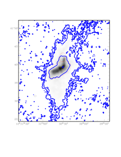

Gaseous dwarf galaxy interactions

I am a part of the TiNy Titans (TNT) Program, for which the goal is to understand the dwarf-dwarf merger sequence through cosmic time.
Recently, Stierwalt et al. 2015 did an extensive study of ~100 dwarf galaxy pairs from SDSS and found that the star formation rates enhance with interaction stage of the pairs. However, when they investigated single dish HI data, only the dwarf pairs residing near a more massive host galaxy showed depletion in gas fraction. So what is the gas doing?
Our goal is to answer this question, by using a sample of 11 interacting dwarf galaxy pairs within the local Universe. The advantage of a local sample is that resolved HI maps exist, which enables us to study the gas in detail. To probe the gas-cycle and merger sequence of dwarf-dwarf interactions, and the full implications of the Stierwalt+ 2015 results, it is crucial to understand whether or not the gas is located within the galaxies, available for star formation, or if it has been removed to large distances by feedback, tidal effects or ram-pressure stripping. Single dish data does not resolve the location and kinematics of the gas. Having a sample of local dwarf galaxy pairs in various environments and at various interaction stages with high resolution
An example of a local interacting dwarf galaxy pair, NGC4490 & NGC4485 (Clemens+ 1998), in the Pearson+ 2015 (in prep.) sample.

HI maps, will help disentangling the gas behavior and ultimately understand the gas-cycle, gas-stripping efficiency and interactions of these systems.
Main collaborators in project: Mary E. Putman & Gurtina Besla